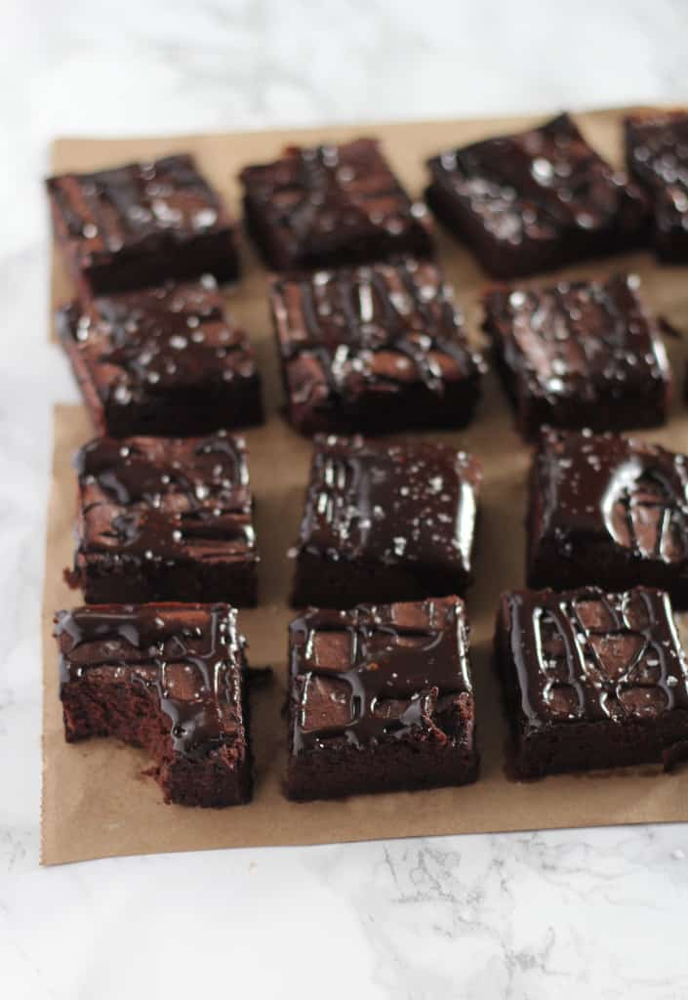
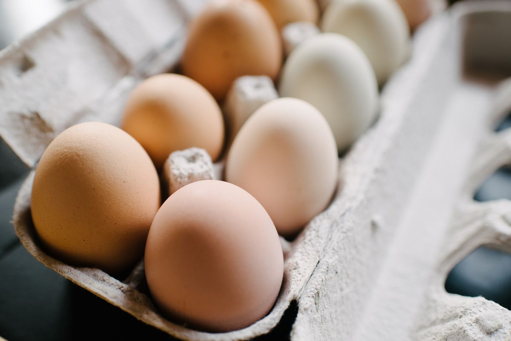
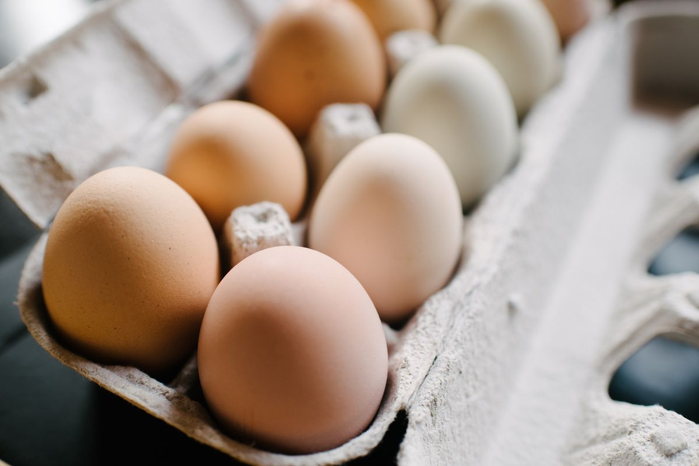
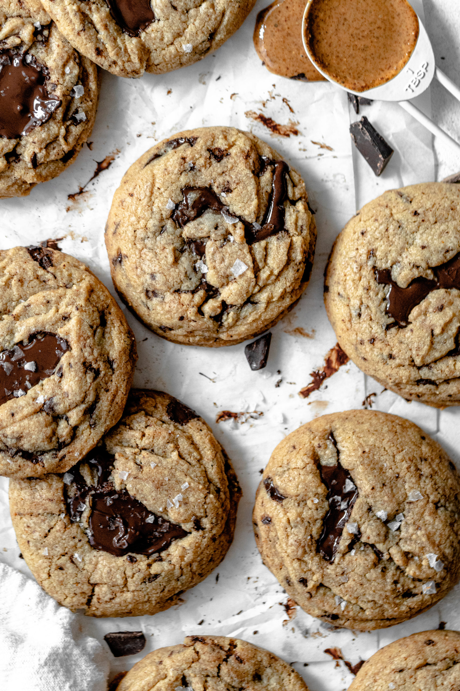
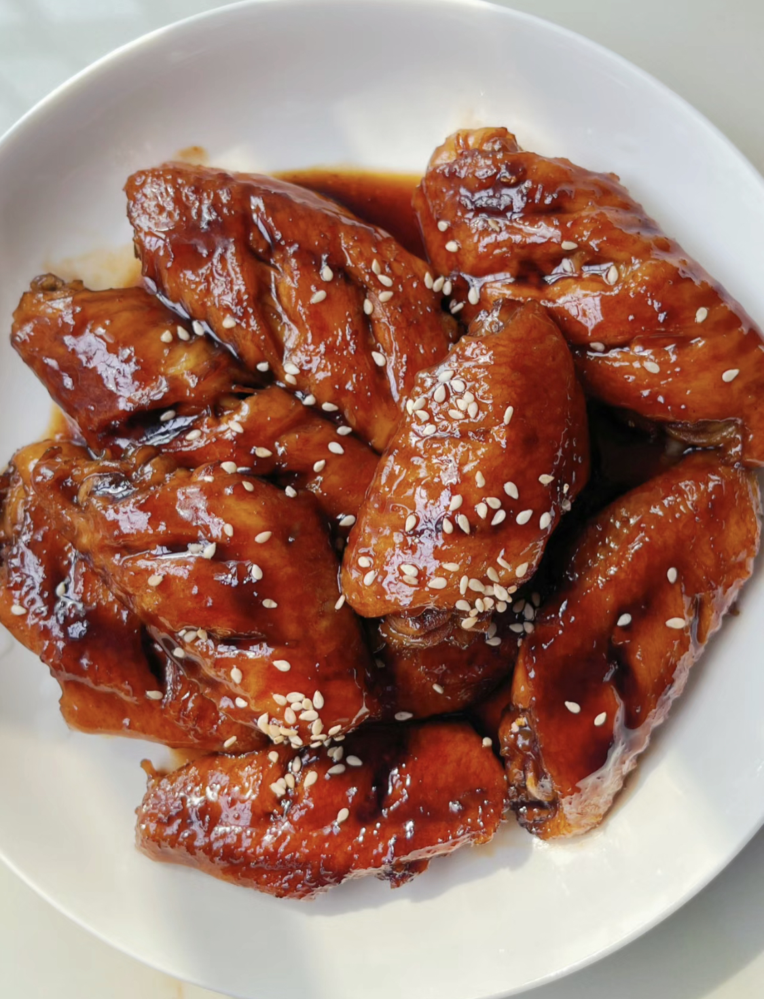

Recipes
Double Chocolate Cookies
Origin: Michigan Source: Family Recipe Category: Dessert
My daughter learned to make these cookies at a baking camp at Zingermanns and has tweaked the recipe to fit the taste buds of her siblings. They are extremely sugary so the salt helps to balance it. Note, these cookies are best eaten very quickly.
Recipe Ingredients
- Unsalted butter
- Granulated Sugar
- Packed light or dark brown sugar
- Large egg
- Pure vanilla extract
- Semi-sweet chocolate chunks (melted)
- All-purpose flour
- Natural unsweetened cocoa powder
- Baking soda
- Salt
- Semi-sweet chocolate chunks
Recipe Steps
- In a mixing bowl cream together the butter, granulated sugar, and brown sugar
- Add the egg and vanilla extract and beat well
- Add the melted chocolate
- In a separate bowl combine the flour, baking soda, cocoa powder and salt
- Combine the wet and dry ingredients
- Add the unmelted chocolate chunks.
- Form 15 cookies and place on a baking sheet.
- Cook for 12 to 13 minutes at 350 degrees.
Additional Food images


Fudgy Date Brownies
Origin: USA Source: The Baker Chick Category: Dessert This is a recipe that swaps processed sugar for dates! it's great for anyone trying to cut down on processed sugar intake.
Recipe Ingredients
- 1 1/2 cups pitted dates
- 1 cup hot water
- 3/4 cup unsalted butter softened (1 1/2 sticks)
- 2 cold eggs
- 1 teaspoon vanilla extract
- 3/4 cup cocoa powder
- 1/2 cup plus 2 tablespoons all purpose flour
- Sea salt for sprinkling
Recipe Steps
- Grease or line an 8x8 baking pan. Preheat oven to 350F.
- In a food processor or blender, puree the dates and hot water until smooth. Measure out a cup of the paste (mine yielded exactly a cup,) and transfer to a large bowl with the butter.
- Cream the butter and date paste until smooth.
- Add the eggs, one at a time and vanilla extract, mixing until fluffy and smooth.
- Add the cocoa and flour, and mix on low until well combined.
- Spread batter into prepared pan, smoothing with the back of a spoon. Sprinkle a little sea salt on top.
- Bake for 18-23 minutes, or until edges are set. Allow pan to cool while you prepare the glaze.
- Whisk together the butter, honey and cocoa powder. Add vanilla and whisk until smooth. If the glaze seems a little runny- add a dash more of cocoa powder. If it seems too thick- you can add a splash of milk. Drizzle over the brownies and sprinkle with more sea salt.
- Brownies will last for up to a week in a sealed container in the fridge.
Additional Food Images
 

Almond Butter Chocolate Chip Cookies
Origin: USA Source: Martha Stewart Category: Dessert This is meant to be a blood-sugar friendly recipe that uses Almond butter in replacement of flour and butter.
Recipe Ingredients
- Almond Butter
- Light brown sugar
- Dark Chocolate Chips
- Salt
- Eggs
Recipe Steps
- Preheat oven to 350 degrees. In a bowl, stir together almond butter, chocolate chips, sugar, eggs, and salt until a dough forms.
- Place 1-tablespoon mounds of dough 1 inch apart on parchment-lined baking sheets. Bake cookies until puffed and tops are set, about 10 minutes.
- Transfer to a wire rack; let cool. Cookies can be stored in an airtight container up to 3 days.
Additional Food Images
Zucchini Fritters
Origin: Unknown Source: Nifty Recipe Category: Side dish/main dish
I found this recipe for zucchini fritters on a food blog when I was looking for quick and easy dishes to make during undergrad. It uses minimal ingredients and can be done in less than half an hour. They are delicious and filling and go great with dipping sauces.
Recipe Ingredients
- Zucchini
- Egg
- Flour
- Vegetable/seed oil
- Salt and pepper
Recipe Steps
- Combine eggs, salt, and pepper and whisk
- Add pressed garlic
- Grate the zucchini and squeeze the moisture out of it
- Add zucchini and flour and mix
- Heat oil in pan and add dollops of batter
- Serve with or without dipping sauce
Additional Food Images


Coca Cola Chicken Wings
Origin: China Source: Famnily Recipe Category: Main Dish I learnt how to cook Coca-Cola chicken wings from my mother, and I've since tweaked her recipe to better suit my family's palate, making it less sweet. While the cooking process remains straightforward, the result is incredibly flavorful, and once you've tried it, you'll understand its delicious appeal!
Recipe Ingredients
- Chicken wings
- Scallions
- Ginger slices
- Cooking wine
- Dark soy sauce
- A can of coke
Recipe Steps
- Wash and place chicken wings in a bowl
- Add scallions, ginger slices, cooking wine, dark soy sauce and salt to the washed chicken wings, and mix them well
- Cover the bowl with plastic wrap and marinate the chicken wings for 1 hour
- Put the right amount of oil in the pot, and put the marinated chicken wings into the pot and fry it until golden brown on both sides
- After fry the chicken wings until golden brown on both sides, then pour a can of coke into the pan and bring to a boil
- Continue to cook for an additional 2-3 minutes until the glaze has thickened and coats the wings nicely
- Transfer the Coca-Cola glazed chicken wings to a serving platter
Additional Food Images